対象: eval53viz large 3-benchmark set
対象手法: baseline, learnckpp, pooling
本レポートは、Cantera で扱う表面反応を含む大規模反応機構を、物理制約を守りながら小さい反応ネットワークへ縮退できるかを評価する。
ベンチマークは次の3ケースである。
| benchmark | 対象 | 縮退前 species | 縮退前 reactions | 条件数 |
|---|---|---|---|---|
diamond |
diamond CVD large | 78 | 385 | 4 |
sif4 |
SiF4 / NH3 / Si3N4 CVD large | 82 | 365 | 6 |
ac |
acetylene hydrocarbon CVD large | 94 | 425 | 8 |
各 benchmark に対し、3つの縮退手法を適用した。結果は、縮退前後のネットワーク図と、温度・圧力・密度などのマクロ物性比較図で確認する。
ネットワーク図の読み方:
*_node_map.md に記載。ノード色の凡例:
| 色 | 意味 | 説明 |
|---|---|---|
| ● 青 | gas | 気相 species または気相 species を代表する縮退ノード |
| ● 橙 | surface | 表面 species、表面 site、または表面 species を代表する縮退ノード |
| ● 緑 | bulk / mixed / other | bulk species、bulk を含むノード、または phase が混在・未分類の縮退ノード |
縮退後の pooling では、1つのノードが複数 species を代表することがある。その場合、色は代表ノードに含まれる主な phase bucket を示す。正確なマージ内容は各 *_node_map.md の Names 欄で確認する。
大規模な表面反応機構では、詳細機構をそのまま使うと計算負荷が高い。単純に species や reaction を削ると、次の問題が起きる。
したがって、縮退は「小さくする」だけでは足りない。物理制約、QoI 精度、ネットワーク構造の可読性を同時に評価する必要がある。
本評価のゴールは次の通りである。
| goal | 内容 |
|---|---|
| 圧縮 | species 数と reaction 数を削減する |
| 物理整合 | 元素保存、非負性、最低 species/reaction 数、重要相の coverage を守る |
| QoI 保持 | 主要な濃度、表面被覆率、deposition 指標の誤差を抑える |
| 汎化評価 | adaptive_kfold により、未使用条件への外挿性能を確認する |
| 可視化 | 縮退前後のネットワーク密度とマクロ物性を第三者が比較できるようにする |
詳細機構を有向グラフとして表す。
$$ G = (V, E) $$
ここで、
反応系の stoichiometric matrix を次で表す。
$$ \nu \in \mathbb{R}^{N_s \times N_r} $$
縮退では、species または状態を縮約写像 $S$ で低次元に写す。
$$ Y = X S $$
reaction の選択は keep mask で表す。
$$ z_j \in {0, 1} $$
縮退率は次で計算する。
$$ r_{\mathrm{sp}} = 1 - \frac{N_s^{\mathrm{after}}}{N_s^{\mathrm{before}}} $$
$$ r_{\mathrm{rxn}} = 1 - \frac{N_r^{\mathrm{after}}}{N_r^{\mathrm{before}}} $$
QoI 誤差は相対誤差で評価する。
$$ \mathrm{relerr}(q) = \frac{|q_{\mathrm{reduced}} - q_{\mathrm{full}}|} {|q_{\mathrm{full}}| + \epsilon} $$
平均誤差は次で集計する。
$$ \overline{e} = \frac{1}{|\mathcal{Q}|} \sum_{q \in \mathcal{Q}} \mathrm{relerr}(q) $$
pass rate は、閾値を満たしたケースまたは QoI の割合である。
$$ \mathrm{pass_rate} = \frac{1}{|\mathcal{C}|} \sum_{c \in \mathcal{C}} \mathbf{1}\left[e_c \le \tau\right] $$
マクロ密度は理想気体近似で確認した。
$$ \rho = \frac{P \overline{M}}{R T} $$
$$ \overline{M} = \sum_i X_i M_i $$
縮退後の密度は、縮退後ネットワークに残った、またはマージされた gas species を用いて再正規化して計算した。縮退後の独立した Cantera マクロ時系列は保存されていないため、温度と圧力は trace の値を before/after に重ねている。
baseline は rule-based な reaction / species 選択を行う。元素 overlap、phase / site mask、物理 floor、balance gate を使い、危険な削除を避ける。
主な特徴:
選択は、おおまかに次の制約付き最適化として見られる。
$$ \max_z \quad \sum_j z_j w_j $$
subject to:
$$ N_s^{\mathrm{after}} \ge N_s^{\min} $$
$$ N_r^{\mathrm{after}} \ge N_r^{\min} $$
$$ \mathrm{coverage}_{\mathrm{active}} \ge \gamma $$
learnckpp は trace 由来の特徴量から重要 reaction を選び、反応数を強く削減する。選択後に coverage-aware postselect と物理 gate を適用する。
特徴量の例:
$$ \phi_i = [ \max_t X_i(t), \mathrm{mean}_t X_i(t), \max_t |\dot{\omega}_i(t)|, \mathrm{element}(i), \mathrm{phase}(i) ] $$
reaction 選択の score は次の形で考えられる。
$$ s_j = f_{\theta}(\phi_{\mathrm{reactants}}, \phi_{\mathrm{products}}, r_j) $$
主な特徴:
pooling は species をクラスタへ集約する。
$$ S_{ik} = \begin{cases} 1 & \text{species } i \text{ が cluster } k \text{ に属する} \ 0 & \text{otherwise} \end{cases} $$
クラスタ後の状態は、
$$ Y_k(t) = \sum_i X_i(t) S_{ik} $$
となる。
反応フラックス行列も cluster 空間へ写す。
$$ F_{\mathrm{red}} = S^{\top} F S $$
クラスタリングでは、次のような損失を抑える。
$$ \mathcal{L} = \mathcal{L}{\mathrm{recon}} + \lambda}}\mathcal{L{\mathrm{phys}} + \lambda $$}}\mathcal{L}_{\mathrm{coverage}
主な特徴:
flowchart TD
A[Cantera detailed mechanism] --> B[Generate / load trace HDF5]
B --> C[Extract X, wdot, rop, temperature, pressure]
C --> D[Build reaction network and stoichiometric matrix]
D --> E{Reduction method}
E --> F[Baseline rule-based selection]
E --> G[LearnCK++ scoring and postselect]
E --> H[Pooling / clustering]
F --> I[Physical gate]
G --> I
H --> I
I --> J[QoI evaluation with adaptive k-fold]
J --> K[Select stage A/B/C]
K --> L[Network visualization before / after]
K --> M[Macro property comparison]
L --> N[Benchmark report]
M --> N
3手法は、同じ trace と評価 gate を使うが、縮退候補の作り方が異なる。baseline は明示ルール、learnckpp は特徴量に基づく reaction scoring、pooling は species / state のクラスタリングを中心に使う。
flowchart TD
A[Trace HDF5] --> B[Feature extraction]
B --> B1[X, wdot, rop, time]
B --> B2[phase, site, element metadata]
B --> B3[QoI metrics]
B1 --> C{Method branch}
B2 --> C
B3 --> C
C --> D[Baseline]
D --> D1[Apply hard masks]
D1 --> D2[Rank reactions by rule score]
D2 --> D3[Keep reactions under floor and coverage constraints]
C --> E[LearnCK++]
E --> E1[Build species / reaction features]
E1 --> E2[Score reaction importance]
E2 --> E3[Coverage-aware postselect]
E3 --> E4[Fallback to baseline if needed]
C --> F[Pooling]
F --> F1[Build graph / flow features]
F1 --> F2[Cluster species or states]
F2 --> F3[Create mapping matrix S]
F3 --> F4[Project dynamics and reaction flow]
D3 --> G[Physical gate]
E4 --> G
F4 --> G
G --> H{Gate passed?}
H -- no --> I[Reject or try safer stage]
H -- yes --> J[QoI evaluation]
I --> J
J --> K[Stage A/B/C selection]
K --> L[Selected reduced network]
L --> M[Network and macro plots]
学習・選択で使う代表的な量は以下である。
$$ \Phi = \left[ X,\ \dot{\omega},\ \mathrm{ROP},\ A,\ p,\ s \right] $$
learnckpp では reaction $j$ の重要度を、
$$ s_j = f_{\theta}(\Phi_j) $$
として求める。ここで、$s_j$ は reaction score、$\Phi_j$ は reaction $j$ に関係する reactant / product / flow 特徴量、$f_{\theta}$ は学習または surrogate に相当する scoring 関数である。
pooling では、species から cluster への写像 $S$ を学習または探索し、縮退後状態を
$$ Y = XS $$
として得る。さらに、反応 flow を
$$ F_{\mathrm{red}} = S^{\top}FS $$
で cluster 空間へ写す。
最終選択では、品質と圧縮を同時に見る。
$$ \mathrm{score} = \alpha r_{\mathrm{rxn}} + \beta r_{\mathrm{sp}} - \lambda \overline{e} - \mu d_{\mathrm{struct}} $$
| 手法 | 概要 | コア技術 | メリット | デメリット |
|---|---|---|---|---|
baseline |
物理ルールと重要度 ranking に基づいて species / reaction を直接選択する。 | hard mask、element overlap、phase/site guard、physics floor、coverage gate、stage A/B/C 探索 | 物理的に説明しやすい。gas / surface の反応分解が追いやすい。品質が安定しやすい。 | reaction 削減率は learnckpp / pooling より控えめ。既存ルールに強く依存する。 |
learnckpp |
trace 由来特徴量から reaction importance を評価し、重要 reaction を残す。 | species / reaction feature、surrogate scoring、coverage-aware postselect、fallback policy | reaction 数を大きく削れる。baseline より aggressive な縮退が可能。 | overall 再合成 reaction になりやすく、反応ドメインの解釈性が下がる。特徴量と scoring の設計に依存する。 |
pooling |
species / state を cluster に集約し、少数の代表ノードで反応ネットワークを表す。 | mapping matrix $S$、graph pooling、cluster guard、flow projection、dynamics reconstruction check | species 数も reaction 数も強く削れる。巨大機構の粗視化に向く。ネットワーク全体の密度を一気に下げられる。 | ノードが複数 species を代表するため、単独ノードの意味が広くなる。node map なしでは解釈しづらい。 |
この比較から、第三者に説明しやすい縮退機構を作るなら baseline が扱いやすい。一方で、計算負荷を最小化したい場合は learnckpp または pooling が有力である。特に pooling は「状態をまとめる」手法なので、縮退後ネットワーク図では node map と併読することが重要である。
| benchmark | method | gate | stage | species before→after | species reduction | reactions before→after | reaction reduction | mandatory pass | mandatory mean | optional mean |
|---|---|---|---|---|---|---|---|---|---|---|
| diamond | baseline | true | B | 78→43 | 44.9% | 385→203 | 47.3% | 1.000 | 0.085 | 0.047 |
| diamond | learnckpp | true | B | 78→43 | 44.9% | 385→100 | 74.0% | 0.897 | 0.208 | 0.137 |
| diamond | pooling | true | B | 78→40 | 48.7% | 385→100 | 74.0% | 0.897 | 0.208 | 0.137 |
| sif4 | baseline | true | C | 82→29 | 64.6% | 365→146 | 60.0% | 0.972 | 0.152 | 0.128 |
| sif4 | learnckpp | true | C | 82→28 | 65.9% | 365→11 | 97.0% | 0.933 | 0.182 | 0.168 |
| sif4 | pooling | true | C | 82→21 | 74.4% | 365→11 | 97.0% | 0.917 | 0.168 | 0.245 |
| ac | baseline | true | C | 94→33 | 64.9% | 425→170 | 60.0% | 0.951 | 0.115 | 0.163 |
| ac | learnckpp | true | C | 94→33 | 64.9% | 425→22 | 94.8% | 0.951 | 0.151 | 0.221 |
| ac | pooling | true | C | 94→8 | 91.5% | 425→13 | 96.9% | 0.951 | 0.151 | 0.221 |
全9 run で gate=true、primary blocker は none だった。baseline は品質面で安定し、learnckpp と pooling は reaction reduction が非常に大きい。
縮退前は 78 species / 385 reactions、縮退後は 43 species / 203 reactions。reaction reduction は 47.3%。baseline は削減率を抑えつつ、mandatory mean 0.085 と最も良い品質を示した。
| before | after | macro |
|---|---|---|
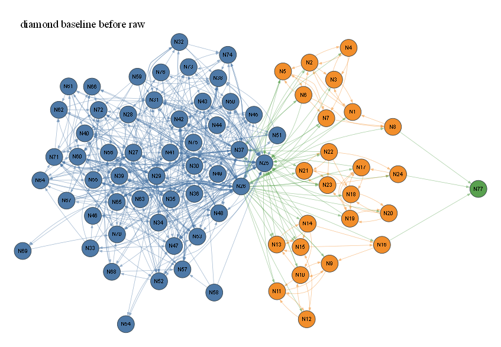 |
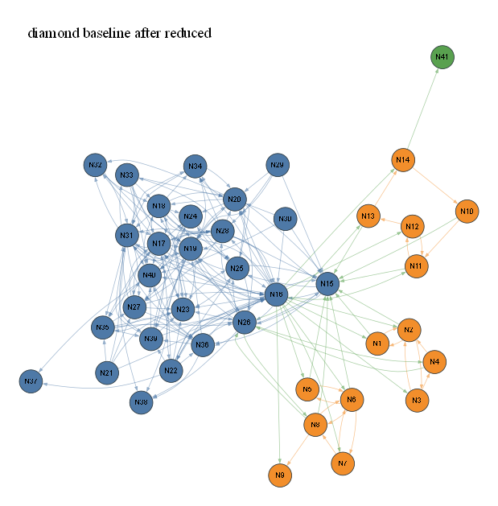 |
Node maps:
縮退後は 43 species / 100 reactions。reaction reduction は 74.0%。baseline と species 数は同等だが、reaction 数を大きく削った。mandatory mean は 0.208 で、baseline より誤差は大きいが gate は通過した。
| before | after | macro |
|---|---|---|
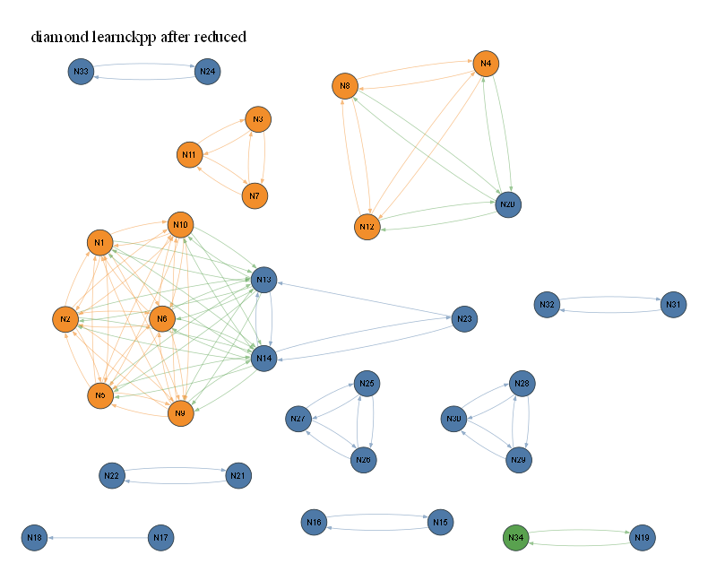 |
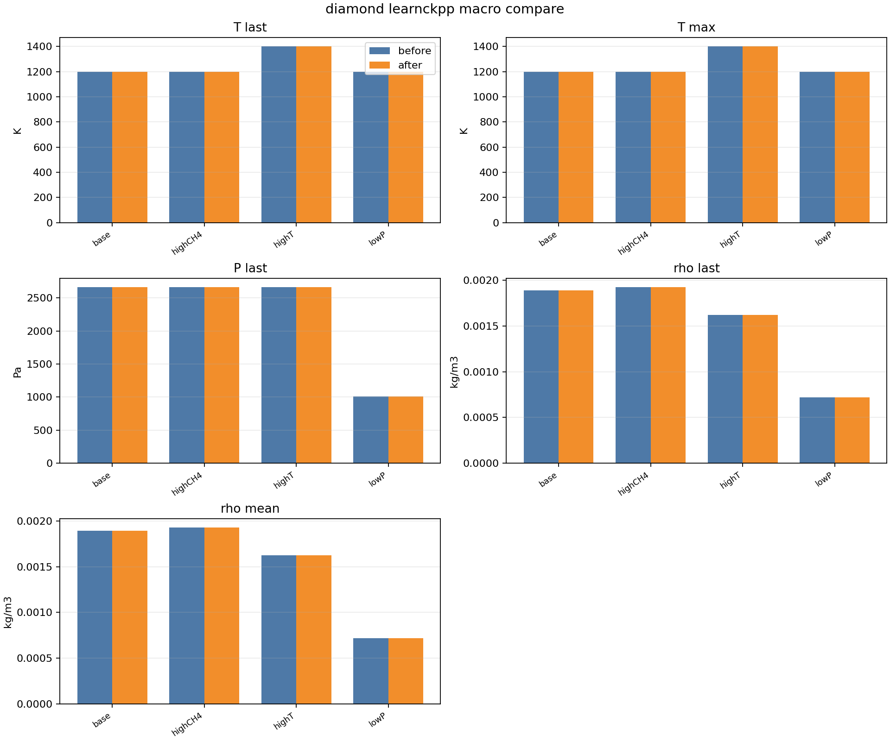 |
Node maps:
縮退後は 40 species / 100 reactions。species reduction は 48.7%、reaction reduction は 74.0%。learnckpp と同等の reaction 数で、species をさらに削った。ノードのマージが増えるため、対応表で cluster 内容を確認する必要がある。
| before | after | macro |
|---|---|---|
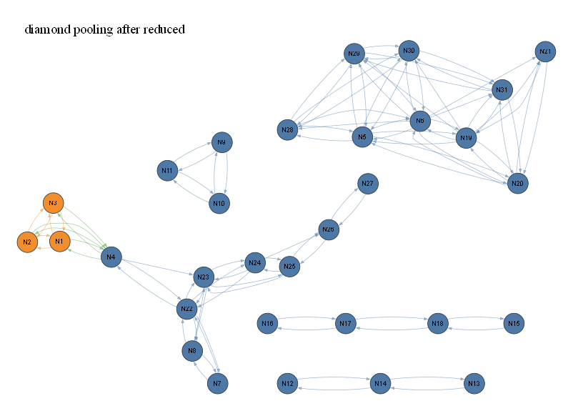 |
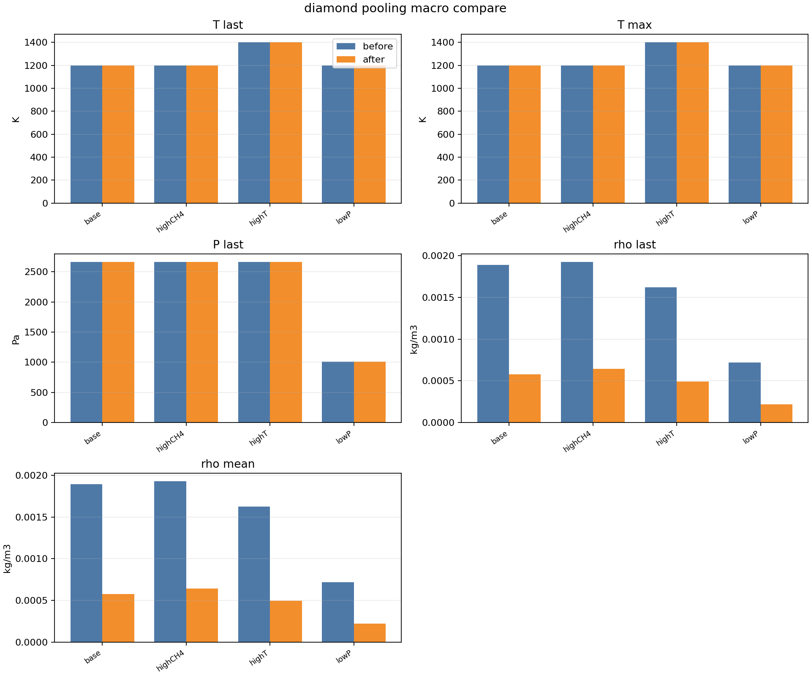 |
Node maps:
縮退後は 29 species / 146 reactions。species reduction は 64.6%、reaction reduction は 60.0%。mandatory pass は 0.972 と高く、品質と削減率のバランスが良い。
| before | after | macro |
|---|---|---|
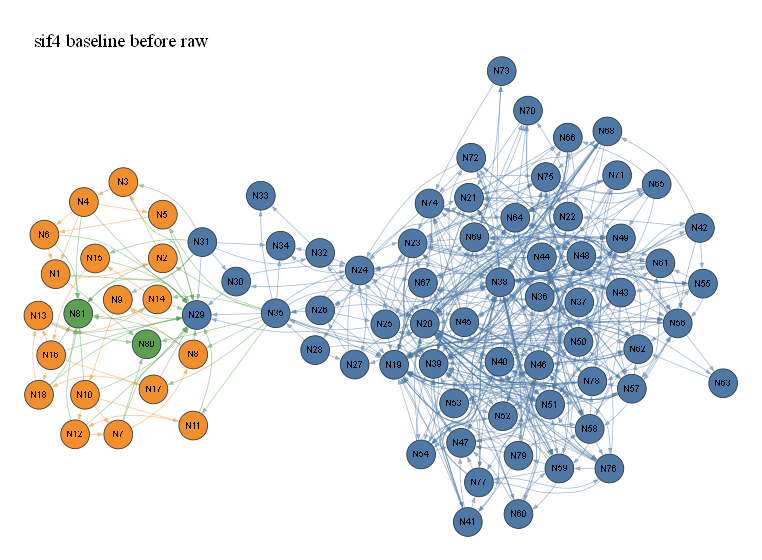 |
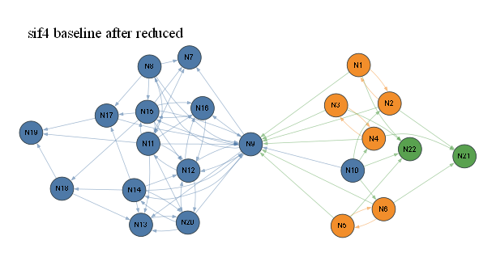 |
Node maps:
縮退後は 28 species / 11 reactions。reaction reduction は 97.0%。非常に強い reaction 圧縮を達成した。mandatory mean は 0.182 で gate は通過しているが、縮退後ネットワークはかなり粗い。
| before | after | macro |
|---|---|---|
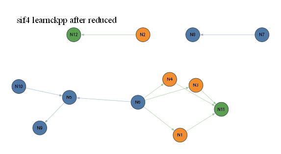 |
Node maps:
縮退後は 21 species / 11 reactions。species reduction は 74.4%、reaction reduction は 97.0%。learnckpp と同じ reaction 数まで落としつつ、species 数もさらに削った。optional mean は 0.245 と3手法中では大きめである。
| before | after | macro |
|---|---|---|
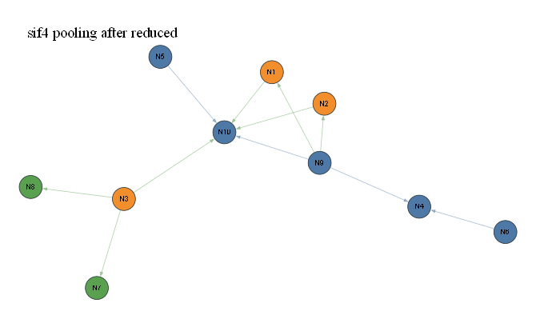 |
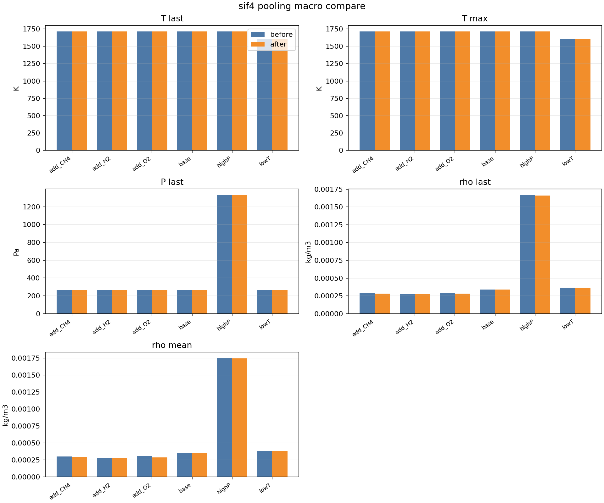 |
Node maps:
縮退後は 33 species / 170 reactions。species reduction は 64.9%、reaction reduction は 60.0%。mandatory mean は 0.115 で、AC benchmark では品質が最も良い。
| before | after | macro |
|---|---|---|
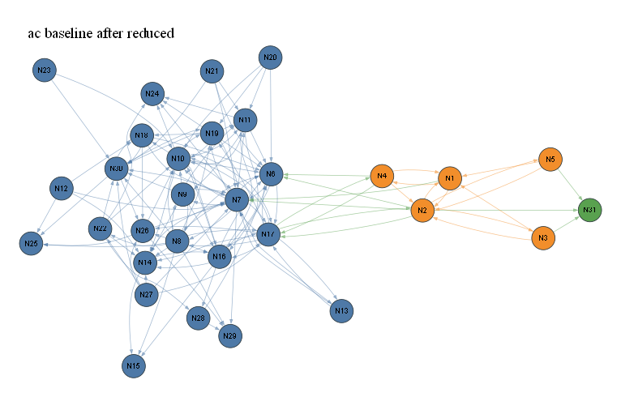 |
Node maps:
縮退後は 33 species / 22 reactions。species 数は baseline と同じだが、reaction 数は 22 まで減った。reaction reduction は 94.8%。mandatory mean は 0.151 で、強い圧縮の割に品質は維持されている。
| before | after | macro |
|---|---|---|
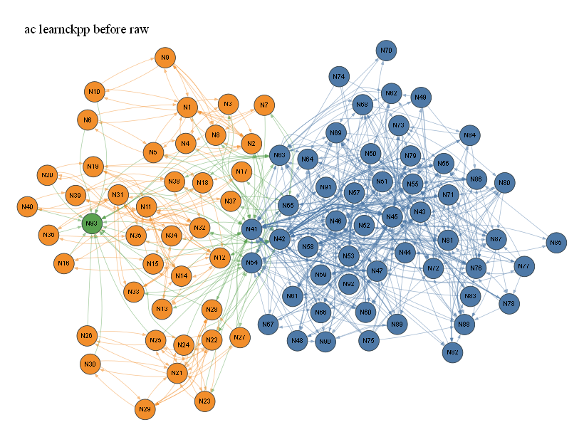 |
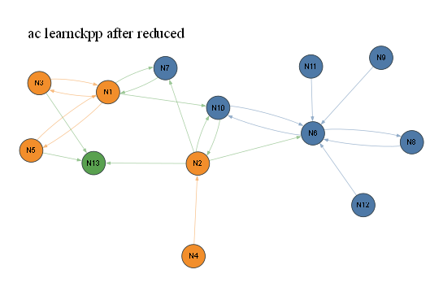 |
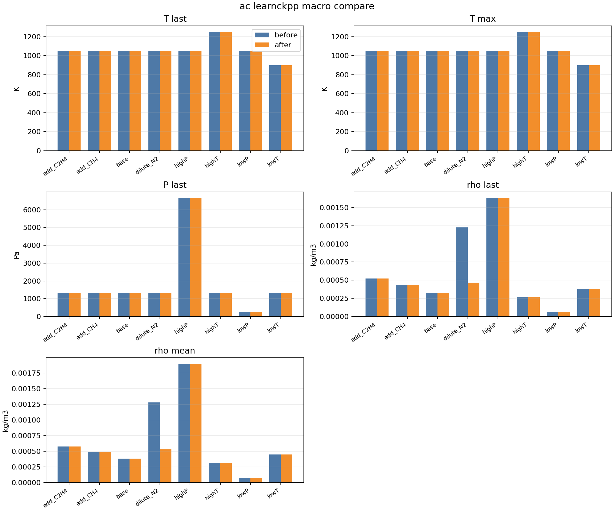 |
Node maps:
縮退後は 8 species / 13 reactions。species reduction は 91.5%、reaction reduction は 96.9%。今回の中で最も強い縮退である。マージによりノード数が大きく減るため、縮退後ネットワークは非常に粗いが、mandatory pass は 0.951 を維持した。
| before | after | macro |
|---|---|---|
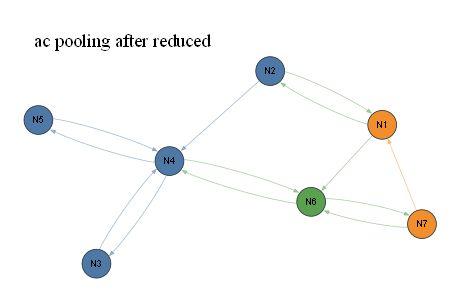 |
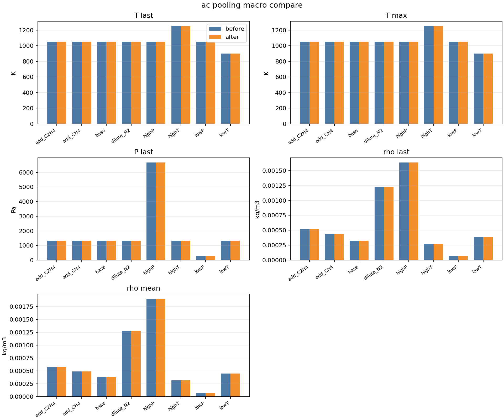 |
Node maps:
baseline は3 benchmark すべてで、mandatory mean が最も小さい。特に diamond では 0.085、ac では 0.115 であり、縮退後も QoI の安定性が高い。reaction reduction は 47.3% から 60.0% に留まるが、第三者がネットワークを読むには最も解釈しやすい。
learnckpp と pooling は reaction 数を大きく削る。sif4 では 365→11、ac/pooling では 425→13 まで削減した。とくに pooling は species も強く削れるため、巨大機構の粗視化には有効である。
一方で、マージ後ノードは複数 species を代表するため、ノード単体の物理的意味は広くなる。したがって、縮退後ネットワーク図だけではなく、必ず node map と併用する必要がある。
マクロ比較図では、temperature と pressure は before/after が重なる。これは縮退後の独立した Cantera 再積分結果が保存されておらず、trace の値を共通に使っているためである。
density は、縮退後ネットワークに含まれる gas species を用いて再正規化した理想気体密度である。したがって、これは「縮退後 gas basis で見た密度の整合性チェック」として読むのが適切である。
縮退前ネットワークは全 benchmark で高密度であり、多数の状態が反応で結ばれている。縮退後は、baseline では密度を残した中規模ネットワーク、learnckpp では reaction が大きく間引かれた疎なネットワーク、pooling では少数の代表ノードに集約された粗いネットワークになる。
この差は、手法の思想をよく反映している。
今回の可視化では、縮退後の独立した Cantera trajectory が保存されていない。次の評価では、縮退機構そのものを Cantera で再実行し、temperature、pressure、density、deposition rate の full vs reduced trajectory を直接比較するのが望ましい。
また、pooling と learnckpp の縮退後 reaction は overall 再合成になりやすい。実務利用では、overall reaction に domain tag、元 reaction index、gas/surface/bulk の由来を保持すると、第三者がより解釈しやすくなる。
関連ファイル:
生成スクリプト: